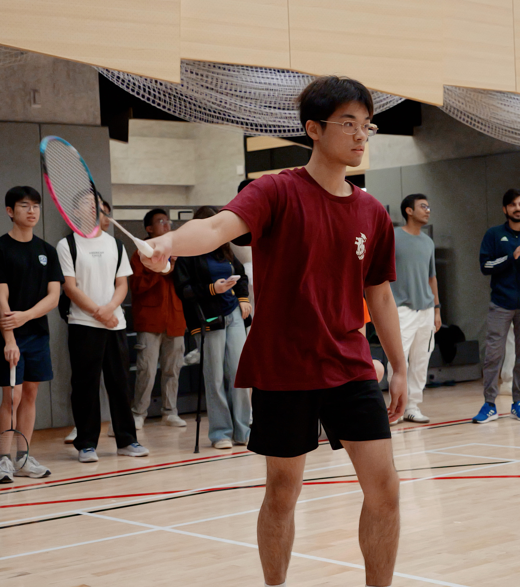
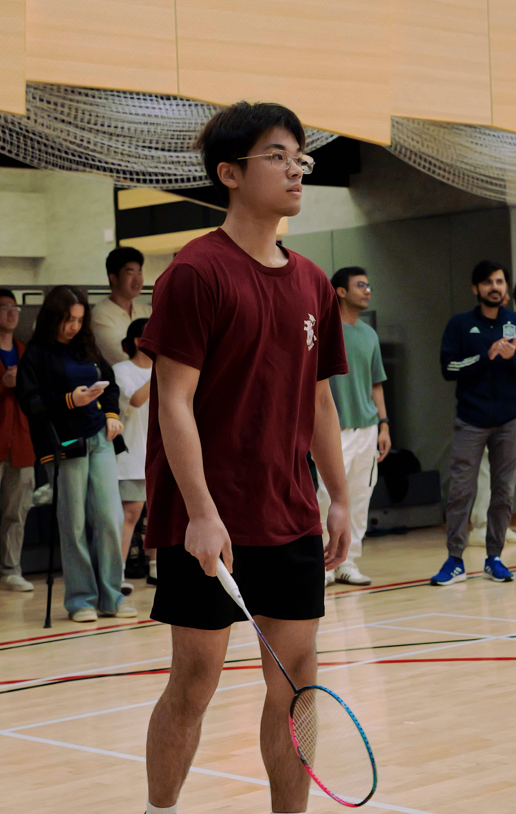
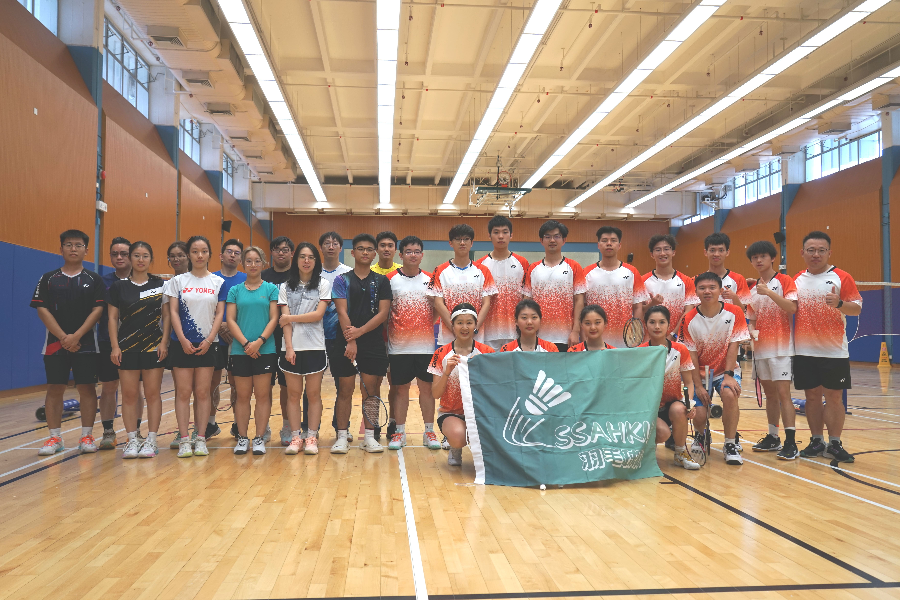
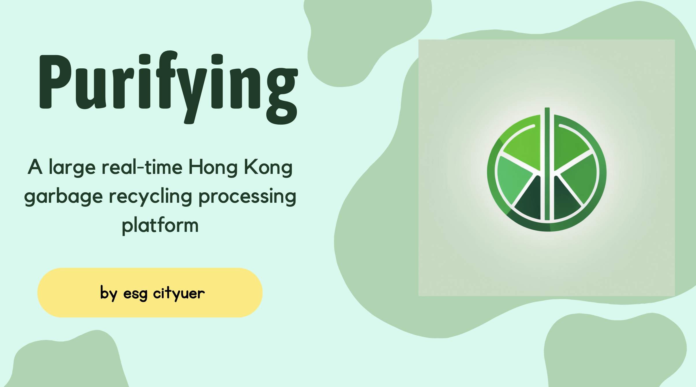

個人簡介與課外活動
個人簡介
我叫張楨 (Ivan)，福建長大，中一來到香港讀書，在香港生活了 10 年時間，現可流利用粵語，英文，普通話交流。中學畢業於路德會呂明才中學，2022 年由 DSE 考入香港城市大學資訊系統學系，2026 年 6 月畢業。希望尋找的職位是 Junior Product Manager/Assistant，Business/Data Analyst，或商業相關的 Graduate/Management Trainee。預期薪資 HK$18,000 – HK$22,000。以下內容是關於我的性格，興趣愛好和對未來的展望。
興趣愛好
我熱愛運動健身，平時經常打羽毛球和健身，中學時也參加了不少運動社團例如排球社，足球社，射箭隊，代表學校參加過校外射箭比賽拿過獎項。這是一段令人懷念的回憶，是對我運動愛好的啟蒙。到了大學接觸了羽毛球這項運動，愛上了羽毛球。也因此認識到一班同樣熱愛羽毛球的朋友，一起參加羽毛球社團。


我由最初的社員慢慢做到了 2 年的羽毛球社隊長與經理，寫了一篇香港各個主流公共體育館的評價攻略，加上我積極參與社團活動，也因此有機會管理城大的羽毛球社團與羽毛球隊。我將社團人數由幾十人慢慢擴大到過千人，也與其他大學溝通，組織了多場友誼賽。在這過程中，我需要管理球隊的財政例如隊服，羽毛球，後勤，也需要與不同的人溝通協調，這提升了我的管理能力與溝通能力，培養了我的責任心與做事嚴謹仔細的態度，也加強了我的自信心和抗壓能力。同時我亦都非常熱愛羽毛球，自己也多次積極參加羽毛球比賽和做比賽的裁判或 helper，我會一直熱愛羽毛球這項運動。

課外活動
我作為一個享受失敗的人，會在每次失敗後復盤原因，使自己下次做得更好。我相信世界上沒有完美的產品，只有不斷迭代，由低質量慢慢改善到高質量的產品。而以下這個商賽就是一個我印象深刻的失敗案例。我在課外同樣積極參加活動與比賽，例如 2024FinTech Trailblazers 2024 Competition 最終得到 finalist，我們構思了一個二手物品回收平台，平台目標是以積分制鼓勵用戶在平台放上自己棄置的二手物品例如衣物，文具等，而大部分人未必知道物品是否可回收，他們便可將物品交給平台代以分類，促進棄置物品的二次利用。一個有趣的故事是，我們的提案在初賽時得到很高評價，但去到決賽因隊員個人安排，我們轉為網上用 Zoom present，結果因為音質與網絡問題，評委難以認真理解我們的想法，導致我們止步決賽。這次失敗也讓我學習到最高效的交流永遠是面對面，網絡工具可作為輔助，但難以讓人真正理解你的想法。

未來職業道路展望
在我 2022 初入大學的時候，AI 革命爆發，全世界被 AI 的強大震驚，而我在那時就是第一批探索 AI 工具的人，由初步的好奇，到之後慢慢感受到 AI 科技的魅力與強大，我在大學自學了 AI 的各種知識，包括 AI 模型的原理，不同種類的 AI 工具（文字，圖像，語音，Agent）運用，AI Prompt 的概念等等。也學習並通過了 Microsoft AI Fundamentals 的考試，表示我對 AI 相關的基本原理較為了解。也曾試過在 AI 萌芽期借助 AI 的強大功能改變 group project 的方向。所以我認為未來的 AI 會成為每個行業都必不可少的工具，我亦希望我可以在 IT 和 AI 的道路上深造，讓自己可以用學到的 AI 技能結合 Python，Excel，SQL，Tableau 等常用工具為工作賦能。